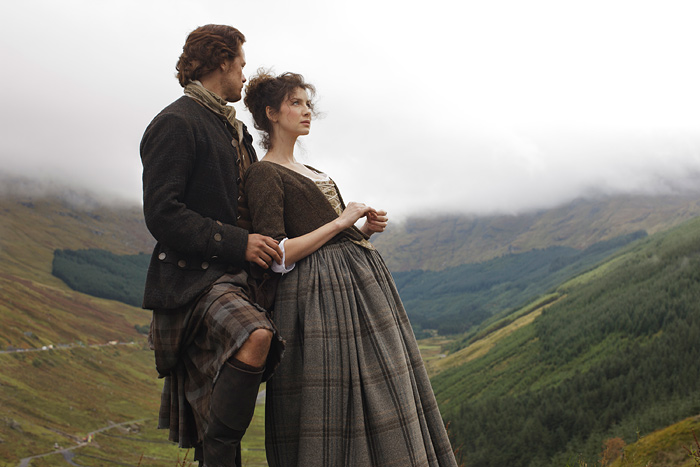

Introdução
Outlander é uma série de televisão britânico‑americana baseada na saga literária de Diana Gabaldon, que estreou em 2014 e mistura romance, físico‑histórico e ficção científica.
Sinopse
Em 1945, Claire Randall, enfermeira na Segunda Guerra, volta a Inverness com o marido. Durante uma visita misteriosa a um círculo de pedras, é transportada para a Escócia de 1743, onde conhece Jamie Fraser e vive uma intensa história dividida entre dois mundos.
Personagens Principais
- Claire Beauchamp Randall Fraser
- Jamie Fraser
- Frank Randall / Jonathan "Black Jack" Randall
- Brianna Randall Fraser
- Roger Wakefield / MacKenzie
Temporadas
A série estreou em 2014 e já conta com 7 temporadas e está em produção da 8ª, que será a final em 2026, adaptando os livros finais da saga.
Curiosidades
- Baseada na série de livros de Diana Gabaldon, com mais de 25 milhões de cópias vendidas.
- Gravada na Escócia e África do Sul.
- A série impactou o turismo nas Terras Altas escocesas.
- O sucesso da série gerou o spin‑off Blood of My Blood, com estreia prevista para agosto de 2025.